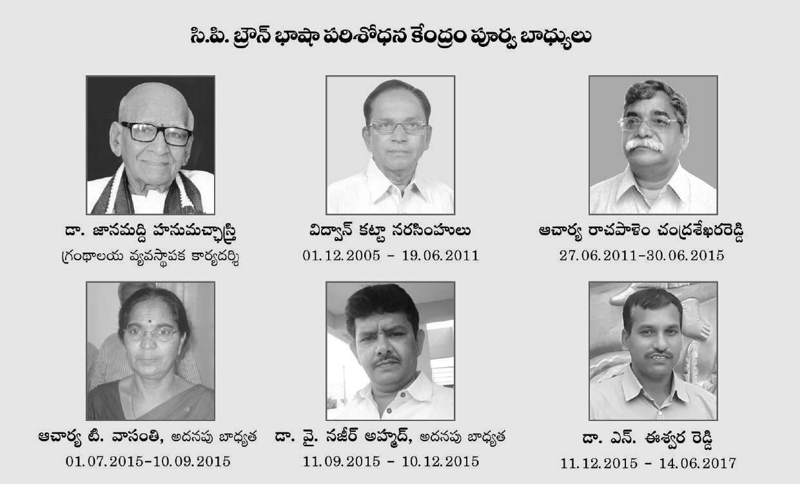

Here are some individuals who have been conferred with the "Role of Honor" by the C.P. Brown Library, Kadapa:
1. Gurram Jashuva: A renowned Telugu poet and writer, known for his contributions to Telugu literature.
2. C. Narayana Reddy: A prominent Telugu poet and writer, known for his works on Telugu literature and culture.
3. Dasarathi: A well-known Telugu poet and writer, known for his contributions to Telugu literature and social justice.
4. K. V. Ramana Reddy: A distinguished Telugu writer and critic, known for his works on Telugu literature and culture.
5. R. S. Sudarshanam: A prominent Telugu writer and critic, known for his contributions to Telugu literature and culture.
6. T. V. R. Sastri: A renowned Telugu writer and critic, known for his works on Telugu literature and culture.
7. V. R. Narla: A well-known Telugu writer and critic, known for his contributions to Telugu literature and social justice.
8. B. R. Chandrasekhar: A distinguished Telugu writer and critic, known for his works on Telugu literature and culture.
9. K. S. R. Das: A prominent Telugu writer and critic, known for his contributions to Telugu literature and culture.
10. N. G. Ranga: A renowned Telugu writer and politician, known for his contributions to Telugu literature and social justice.
These individuals have been recognized for their outstanding contributions to Telugu language and literature, and for their role in promoting the cultural heritage of Andhra Pradesh.
Some of them are:
